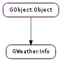

| static | new(location, forecast_type) |
| static | new_for_world(world, location, forecast_type) |
| abort() | |
| get_apparent() | |
| get_attribution() | |
| get_conditions() | |
| get_dew() | |
| get_enabled_providers() | |
| get_forecast() | |
| get_forecast_list() | |
| get_humidity() | |
| get_icon_name() | |
| get_location() | |
| get_location_name() | |
| get_pressure() | |
| get_radar() | |
| get_sky() | |
| get_sunrise() | |
| get_sunset() | |
| get_temp() | |
| get_temp_max() | |
| get_temp_min() | |
| get_temp_summary() | |
| get_upcoming_moonphases(phases) | |
| get_update() | |
| get_value_apparent(unit) | |
| get_value_conditions() | |
| get_value_dew(unit) | |
| get_value_moonphase() | |
| get_value_pressure(unit) | |
| get_value_sky() | |
| get_value_sunrise() | |
| get_value_sunset() | |
| get_value_temp(unit) | |
| get_value_temp_max(unit) | |
| get_value_temp_min(unit) | |
| get_value_update() | |
| get_value_visibility(unit) | |
| get_value_wind(unit) | |
| get_visibility() | |
| get_weather_summary() | |
| get_wind() | |
| is_daytime() | |
| is_valid() | |
| network_error() | |
| next_sun_event() | |
| set_enabled_providers(providers) | |
| set_location(location) | |
| update() |
| Name | Type | Flags | Description |
|---|---|---|---|
| enabled-providers | GWeather.Provider | r/w | A bitmask of enabled weather service providers |
| forecast-type | GWeather.ForecastType | r/w/c | The type of forecast desired (list, zone or state) |
| location | GWeather.Location | r/w | The location this info represents |
| world | GWeather.Location | r/w/c | The hierarchy of locations containing the desired location |
| Name | Parameters | Return | Description |
|---|---|---|---|
| updated |
| Name | Type | Access |
|---|---|---|
| parent_instance | GObject.Object | r |
Bases: GObject.Object
GWeather.Info provides a handy way to access weather conditions and forecasts from a GWeather.Location, aggregating multiple different web services.
It includes also astronomical data such as sunrise times and moon phases.
| Parameters: |
|
|---|---|
| Returns: | a new GWeather.Info |
| Return type: |
Builds a new GWeather.Info that will provide weather information about location. The returned info will not be ready until the GWeather.Info ::updated signal is emitted.
| Parameters: |
|
|---|---|
| Returns: | a new GWeather.Info |
| Return type: |
Similar to GWeather.Info.new (), but also has a world parameter, that allow controlling the hierarchy of GWeather.Location to which location (or the default one taken from Gio.Settings ) belongs.
| Returns: | the required attribution text, in Pango markup form, or None if not required |
|---|---|
| Return type: | str |
Some weather services require the application showing the data to include an attribution text, possibly including links to the service website. This must be shown prominently toghether with the data.
| Return type: | GWeather.Provider |
|---|
| Returns: | list of GWeather.Info objects for the forecast. The list is owned by the ‘info’ object thus is alive as long as the ‘info’. This list is filled only when requested with type FORECAST_LIST and if available for given location. The ‘update’ property is the date/time when the forecast info is used for. |
|---|---|
| Return type: | [GWeather.Info] |
| Return type: | GWeather.Location |
|---|
| Returns: | what? |
|---|---|
| Return type: | GdkPixbuf.PixbufAnimation |
| Parameters: | unit (GWeather.TemperatureUnit) – the desired unit, as a GWeather.TemperatureUnit |
|---|---|
| Returns: | True is value is valid, False otherwise. |
| Return type: | bool, value: float |
| Returns: | True is out arguments are valid, False otherwise. |
|---|---|
| Return type: | bool, phenomenon: GWeather.ConditionPhenomenon, qualifier: GWeather.ConditionQualifier |
Fills out phenomenon and qualifier with current weather conditions.
| Parameters: | unit (GWeather.TemperatureUnit) – the desired unit, as a GWeather.TemperatureUnit |
|---|---|
| Returns: | True is value is valid, False otherwise. |
| Return type: | bool, value: float |
| Returns: | True is value is valid, False otherwise. |
|---|---|
| Return type: | bool, value: float, lat: float |
| Parameters: | unit (GWeather.PressureUnit) – the desired unit, as a GWeather.PressureUnit |
|---|---|
| Returns: | True if value is valid, False otherwise. |
| Return type: | bool, value: float |
| Returns: | True is sky is valid, False otherwise. |
|---|---|
| Return type: | bool, sky: GWeather.Sky |
Fills out sky with current sky conditions.
| Parameters: | unit (GWeather.TemperatureUnit) – the desired unit, as a GWeather.TemperatureUnit |
|---|---|
| Returns: | True is value is valid, False otherwise. |
| Return type: | bool, value: float |
| Parameters: | unit (GWeather.TemperatureUnit) – the desired unit, as a GWeather.TemperatureUnit |
|---|---|
| Returns: | True is value is valid, False otherwise. |
| Return type: | bool, value: float |
| Parameters: | unit (GWeather.TemperatureUnit) – the desired unit, as a GWeather.TemperatureUnit |
|---|---|
| Returns: | True is value is valid, False otherwise. |
| Return type: | bool, value: float |
| Parameters: | unit (GWeather.DistanceUnit) – the desired unit, as a GWeather.DistanceUnit |
|---|---|
| Returns: | True if value is valid, False otherwise. |
| Return type: | bool, value: float |
| Parameters: | unit (GWeather.SpeedUnit) – the desired unit, as a GWeather.SpeedUnit |
|---|---|
| Returns: | True if speed and direction are valid, False otherwise. |
| Return type: | bool, speed: float, direction: GWeather.WindDirection |
| Return type: | bool |
|---|
Returns whether it is daytime (that is, if the sun is visible) or not at the location and the point of time referred by info. This is mostly equivalent to comparing the return value of GWeather.Info.get_value_sunrise () and GWeather.Info.get_value_sunset (), but it accounts also for midnight sun and polar night, for locations within the Artic and Antartic circles.
| Parameters: | providers (GWeather.Provider) – |
|---|
| Parameters: | location (GWeather.Location or None) – a location for which weather is desired |
|---|
Changes info to report weather for location.